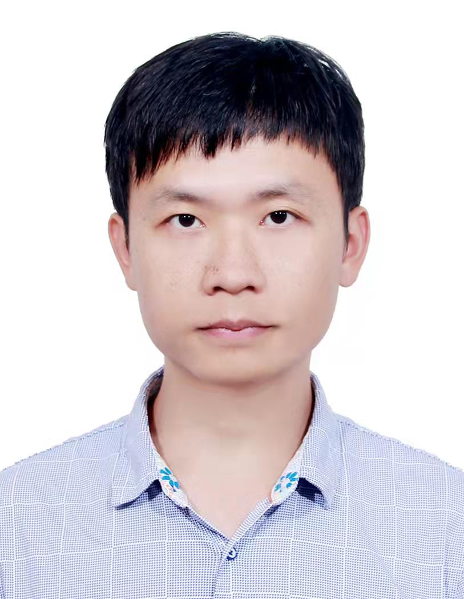

个人简介
Brief CV

工作经历
- 2021.9 - 至今，副研究员- 中国科学院数学与系统科学研究院 ；
- 2018.9 - 2021.9，研究助理教授 - 香港中文大学；
- 2016.8 - 2018.8， 博士后研究员 - 加拿大麦吉尔大学， 合作导师: 管鹏飞教授 。
教育背景
- 2010.9 - 2016.6， 博士 - 基础数学, 中国科学技术大学， 导师: 麻希南教授；
- 2005.9 - 2009.6， 学士 - 数学与应用数学, 西北大学。
奖励和基金:
- 2019, 中国数学会钟家庆奖。
- 2021, 国家海外青年人才计划。
Employment
- 2021.9 - Now, Associate Professor (Tenure-track) - Academy of Mathematics and Systems Science.
- 2018.9 - 2021.9, Research Assistant Professor - Chinese University of Hong Kong.
- 2016.8 - 2018.8, Postdoctoral fellow - McGill University. Mentor: Prof. Pengfei Guan.
Education
- 2010.9 - 2016.6, Ph.D., University of Science and Technology of China. Advisor: Prof. Xinan Ma.
- 2005.9 - 2009.6, B.S. in Mathematics, Northwest University, China.
Honors and Funds:
- 2019, Zhong Jiaqing Mathematics Award.
- 2021, National Overseas Youth Talent Program.
研究方向: 偏微分方程，几何分析。
Research Area: Partial Differential Equations, Geometric Analysis.
主页: 中科院数学所个人主页。
Website: on AMSS.
研究成果
Publications
代表作：
- 三维预定数量曲率超曲面的曲率内估计。 Amer. J. Math., 2024. （独作）
- 三维欧式空间中sigma-2方程的Hessian内估计。 Front. Math, 2024. （独作）
- 预定数量曲率方程凸解的内C2正则性。 Duke Math. J., 2019. （合作者：管鹏飞）
- Hessian方程的Neumann问题。 Comm. Math. Phys., 2019. （合作者：麻希南）
- Reilly公式的推广及其在Heintze-Karcher不等式中的应用。 Int. Math. Res. Not. IMRN, 2015. （合作者：夏超）
我的文章：
Representative Works：
- Interior curvature estimates for hypersurfaces of prescribing scalar curvature in dimension three.
Amer. J. Math., 2024.
- Interior Hessian Estimates for sigma-2 Equations in Dimension Three.
Front. Math, 2024.
- Interior C2 regularity of convex solutions to prescribing scalar curvature equations.
With Pengfei Guan, Duke Math. J., 2019.
- The Neumann Problem for Hessian Equations.
With Xinan Ma, Comm. Math. Phys., 2019.
- A generalization of Reilly’s formula and its applications to a new Heintze-Karcher type inequality.
With Chao Xia, Int. Math. Res. Not. IMRN, 2015.
My papers：